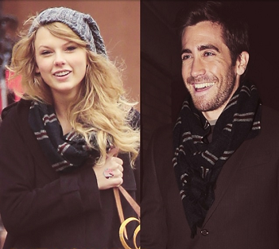

I walked through the door with you
The air was cold
But something about it felt like home somehow
And I, left my scarf there at your sister's house
And you've still got it in your drawer even now

Oh, your sweet disposition
And my wide-eyed gaze
We're singing in the car, getting lost upstate
Autumn leaves falling down like pieces into place
And I can picture it after all these days
And I know it's long gone and that magic's not here no more
And I might be okay but I'm not fine at all
'Cause there we are again on that little town street
You almost ran the red 'cause you were lookin' over at me
Wind in my hair, I was there
I remember it all too well
Photo album on the counter
Your cheeks were turning red
You used to be a little kid with glasses in a twin-sized bed
And your mother's telling stories 'bout you on the tee-ball team
You told me 'bout your past thinking your future was me
And I know it's long gone and there was nothing else I could do
And I forget about you long enough to forget why I needed to
'Cause there we are again in the middle of the night
We're dancing 'round the kitchen in the refrigerator light
Down the stairs, I was there
I remember it all too well, yeah
And maybe we got lost in translation
Maybe I asked for too much
But maybe this thing was a masterpiece 'til you tore it all up
Running scared, I was there
I remember it all too well
And you call me up again just to break me like a promise
So casually cruel in the name of being honest
I'm a crumpled up piece of paper lying here
'Cause I remember it all, all, all
Too well
Time won't fly, it's like I'm paralyzed by it
I'd like to be my old self again
But I'm still trying to find it
After plaid shirt days and nights when you made me your own
Now you mail back my things and I walk home alone
But you keep my old scarf from that very first week
'Cause it reminds you of innocence
And it smells like me
You can't get rid of it
'Cause you remember it all too well, yeah
'Cause there we are again when I loved you so
Back before you lost the one real thing you've ever known
It was rare, I was there, I remember it all too well
Wind in my hair, you were there, you remember it all
Down the stairs, you were there, you remember it all
It was rare, I was there, I remember it all too well